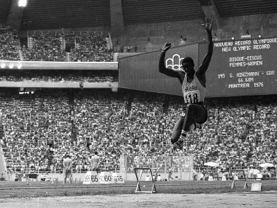
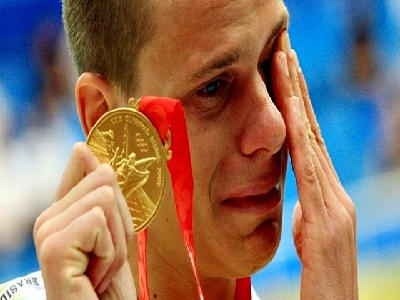
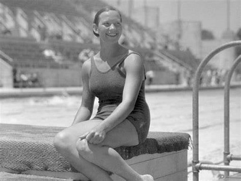
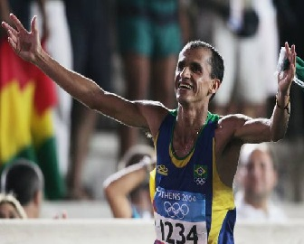
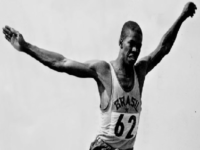
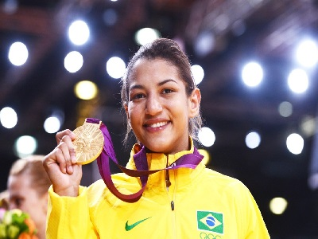

Melhor jogador da história do basquete brasileiro e considerado um dos melhores do mundo na sua época, mesmo sem atuar na NBA, Oscar nunca conseguiu levar o Brasil e seus companheiros ao pódio olímpico. Ele disputou 5 olimpíadas e o melhor resultado do atleta foi um 5º lugar, conquistado em três oportunidades.
Conseguiu a proeza de vencer a prova dos 800m superando os dois favoritos no início da corrida com um arranque impressionante. Joaquim Cruz foi o primeiro campeão olímpico no atletismo depois de Adhemar Ferreira da Silva, em Los Angeles em 1984 e o único atleta brasileiro a vencer uma prova de pista em uma Olimpíada.
O velejador Robert Scheidt é simplesmente o maior medalhista brasileiro da história, com cinco medalhas. Ele possui duas de ouro, duas prata e uma de bronze. Scheidt foi campeão da classe laser em Atlanta em 1996 e Atenas em 2004.
João do Pulo
César Cielo
Maria Lenk
Dono do recorde mundial, João do Pulo chegou à Olimpíada de Montreal com status de favorito. Mas não foi o que aconteceu. Uma cirurgia na barriga prejudicou o atleta, que era um dos mais famosos da delegação brasileira na época. Ele faturou a medalha de bronze. Nos jogos de 1980, ele ainda era considerado um dos favoritos e detinha o recorde mundial, mas foi prejudicado pelos juízes que anularam dois saltos legais do atleta para favorecer os russos, donos da casa.
O Brasil nunca foi uma grande potência na natação, mas o nadador César Cielo conseguiu o incrível feito de colocar o país no alto do pódio nas Olimpíadas de 2008, em Pequim. Ele venceu a prova dos 50m livre e emocionou o país se tornando o único campeão olímpico brasileiro nas águas.
A nadadora de São Paulo foi uma incrível pioneira da natação. Ela foi a primeira atleta sul-americana a participar de uma Olimpíada, em Los Angeles-1932. Ela também é a única brasileira que está no Hall da Fama da Natação, em Fort Lauderdale, Flórida. Maria Lenk não ganhou medalha, mas se tornou uma espécie de embaixadora do esporte. A principal competição leva seu nome, o Troféu Maria Lenk.
Vanderlei Cordeiro
Adhemar Ferreira
Sarah Menezes
Talvez seja o atleta com a imagem olímpica mais marcante da história. Vanderlei liderava a maratona em Atenas, em 2004, quando um sacerdote irlandês invadiu a pista e segurou o corredor, comprometendo o resto da corrida do brasileiro. Vanderlei conseguiu juntar forças e continuou a prova, terminando em 3º lugar, comemorando muito na sua chegada ao estádio e sendo aplaudido de pé pelo público presente. Posteriormente, ele ganhou medalha Pierre de Coubertin por seu espírito esportivo.
Foi o primeiro bicampeão olímpico do Brasil e ficou com esse título por longos 48 anos, até outros alcançarem o feito em 2004. A conquista de Adhemar na sua especialidade, o salto triplo, foi impressionante. Nas Olímpiadas de Helsinque, em 1952, ele quebrou o recorde mundial quatro vezes na mesma tarde. Faturou o bi em 1956 em Melbourne.
A judoca Sarah Menezes emocionou o Brasil nos Jogos Olímpicos de Londres, em 2012. Ela foi a primeira mulher da história do país a conquistar uma medalha de ouro no judô, aos 22 anos.